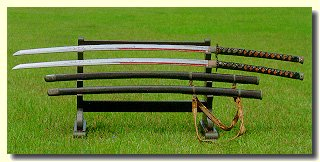

충무공 이순신 장군은 조선시대의 명장이다.
우리에겐 '거북선', '난중일기', '노량대첩', '명량대첩' 등의 키워드로 알려져 있다. 그리고 여기에 한가지 더. 아시는 분들은 아시겠지만 현충사에 보관된 '이순신 장군의 검'도 부분적으로 알려져 있다. 이 검에 대해 말이 많았던 것은 그 크기 때문이다. 길이가 자그마치 197.5cm 무게도 5.3kg 이나 되는 장검이다. 내가 직접 검도를 해보고(24반 무예를 조금 했다) 검도에 관심이 많아서 아는건데 이건 무지 크고 무거운거다.
일반적으로 검은 길이가 1m 내외, 무게가 1.3kg 내외로 제작된다. 이것은 사용자의 신장과 체중에 맞추는 것이다. 장검이라고 해도 길이 1.3m 내외 무게는 1.7kg 정도로 이순신 장군의 검과는 비교가 되지 않는다.
참고주소 - 장검(長劍) 보물 제 326호
검의 크기가 이렇다보니 우리는 이 검이 장식용이라고 생각하고 있다.
여기서 나는 '생각하고 있다' 라고 말했는데 아마도 여러분은 주입식 교육 덕택에 그냥 그렇게 믿고 있을지도 모른다. 아마도 여러분은 이 큰 검이 이순신장군의 자택에 걸려 있어서 단순히 장식용으로 쓰였거나 아니면 전장에서 장군의 위엄을 나타내기 위해 그냥 차고만 다니던것으로 알고 있을것이다.
결국 이 검이 너무 크기 때문에 직접 휘두르며 사용한건 아니라는 '주장' 이다. 실제로 여러분이 진검을 다뤄보았다면 1.3kg 의 무게도 그 길이 때문에 만만치 않다는 것을 느꼈을 것이다. 5.3kg 이라면 휘두르는것은 커녕 '진군하라~!!' 라고 외치면서 앞으로 내미는것 조차 어려울것이다. 이건 아령과는 다르다. 아령 5kg 은 우습지만 그게 검으로 변하면 무게중심이 손목에서 멀어지기 때문에 손목에 큰 무리가 온다. 어지간한 완력이 아니라면 별로 사용하고 싶지 않을 것이 분명하다.
하지만. 상상해보자. 어떤 평범한 체구의 장군이 2m 가량 되는 검을 차고(?) 있다거나 아니면 그걸 힘겹게 뽑아 들고 '진군하라~!!' 라고 외친다면? 그것을 '위엄' 과 연관짓기는 쉽지 않을 것이다. 아무리 생각해봐도 그건 안 어울린다. 그렇다면? 쉬운 답이 있다. 이순신 장군은 2m 가 훨씬 넘는 장신에 엄청난 완력을 가진 거인인 것이다. 그게 더 억지 라고?
★우리 시대에도 거인은 많다.
이순신 장군은 원래 키가 컸던게 분명하다. 아무리 폼이라지만 차고 있는 검보다 작아서는 폼이 날리 없다. 당시의 장군이라 함은 풍채가 당당하고 기골이 장대하여 병사들 앞에 섰을 때 병사들이 절로 머리를 조아릴만한 인물이어야 했을 것이다. 삼국지에도 보면 장수들의 체격을 표현할 때 무작정 부풀려서 표현하는것이 아니라 그들 사이에도 체격에 따른 우위가 있음을 드러내고 있다. 요즘같으면 키 크고 덩치 큰 사람들이 특별히 사회에 쓰일만한 곳이 없지만 (스포츠에는 곧잘 도움이 되곤 한다) 칼과 활로 전투를 하던 당시에는 말에 올라타 전두 지휘하는 장수의 체격이 얼마나 중요했을지는 쉽게 상상할 수 있다.
이순신장군의 전기에 보면 28세의 늦깍이로 무과를 보게 되는데 말타기 시험에서 말이 쓰러져 다리를 다치는 얘기가 나온다. 말에서 떨어진것이 아니라 말이 쓰러진것이다. 표현하기 나름이겠지만 이것도 이순신장군의 선천적인 거구의 체격 때문이 아니었을까 추측할 수 있다. 앞서 소개한 홈페이지를 다시 보자. 이순신장군이 허리에 차던 요대(腰帶)의 사진이 있다.
길이가 140cm 인치로 따지면 55인치쯤 된다. 사극에서 처럼 대충 둘러치고 기울이는 모양은 아니다. 분명 몸통 모양에 맞는 타원형이다. 조선땅이 좁다고는 하나 어딘가에는 천재가 있고 귀인이 있는 법이다. 중국의 넓은 대륙이 삼국지의 수많은 거인 장수들을 출현케 했다면 조선 땅에도 이런 거인 장수가 나타나지 않으리란법은 없다.
★우리의 잣대로 평가하지 말자
사실 이순신 장군의 검으로 하고 싶은 말은따로 있다. 그것은 결코 나의 일이 아닌것을 나의 잣대로 평가하고 판단하지 말자는 것이다. 우리 인간의 신체구조만 놓고 본다면 뇌와 심장의 수직 높이 차이가 2m 이상 되는 기린이 어떻게 뇌에 혈액을 공급하고 심장이 그 압력을 견딜 수 있는지 이해할 수 없다. 그렇다고 기린의 뇌가 목 중간에 있다거나 기린의 심장이 턱에 있다고 할 것인가? 만약에 기린이 멸종된지 수천년이 지나서 그 흔적조차 찾기 어렵다면 어땠을까? 다행히도 우리는 기린을 자주 볼 수 있고(적어도 이순신장군보다는) 연구할 수도 있다.
예수께서 '너희의 믿음이 겨자씨만큼만 있어도 산을 옮길 수 있다' 라고 하셨을 때 그 말조차 그대로 믿지 못하고 그저 예수 특유의 '비유' 로 받아들인 세대에게 이런 말이 먹혀들어갈지는 의문이다. 믿음으로 홍해를 가른 모세를 보고도 자신도 믿음만 있다면 홍해를 가를 수 있다고는 차마 생각하지 못하는게 인간인 것이다.
때론 그냥 믿어보자. 보지 않고 믿어야 참된 믿음이라는데 2m 짜리 검을 보고도 우리 멋대로 해석해버리는것은 너무 심한것 아닌가?
예수께서 '너희의 믿음이 겨자씨만큼만 있어도 산을 옮길 수 있다' 라고 하셨을 때 그 말조차 그대로 믿지 못하고 그저 예수 특유의 '비유' 로 받아들인 세대에게 이런 말이 먹혀들어갈지는 의문이다. 믿음으로 홍해를 가른 모세를 보고도 자신도 믿음만 있다면 홍해를 가를 수 있다고는 차마 생각하지 못하는게 인간인 것이다.
때론 그냥 믿어보자. 보지 않고 믿어야 참된 믿음이라는데 2m 짜리 검을 보고도 우리 멋대로 해석해버리는것은 너무 심한것 아닌가?